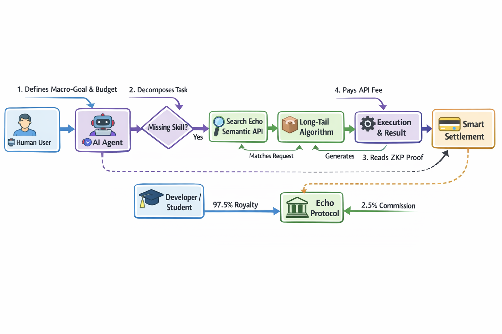

将沉默在 GitHub 与 arXiv 中的有效工程算法转化为可验证的 API。我们不仅仅交易代码，我们交易的是“可验证的计算结果”。 Echo turns high-value scientific algorithms into verifiable APIs that AI Agents can buy and use instantly. We trade "verifiable compute results".
大量真实的工程算法能够解决实际问题，但由于人类和企业的注意力有限，它们产生的商业价值不足以吸引企业投入精力去集成。
此外，买方不愿意购买“黑盒”API，担心结果伪造；卖方不愿共享源代码，担心知识产权被窃取。
Top-tier algorithms are trapped in academic PDFs or corporate servers. The commercial value may not attract corporate attention due to limited human bandwidth.
Buyers won't buy "black box" APIs fearing fabricated results. Sellers won't share source code fearing their IP will be stolen.
在 AI Agent 时代，Agent 拥有无限的精力去发现、调用并整合这些算法碎片。我们将这些长尾算法上传到 ECHO，供 Agent 无缝调用。
结合成熟的区块链与 ZK（零知识证明）技术，彻底解决了开源环境下的信任建立与版权保护问题。
AI Agents possess limitless energy to discover and call upon these fragmented algorithms. Echo allows these algorithms to be uploaded for seamless Agent invocation.
Zero-Knowledge (ZK) technology completely resolves the trust and copyright issues in open-source environments.
通过零知识性能证明（ZK-POP），我们用纯粹的数学填补信任鸿沟。 We use pure math to bridge the trust gap via Zero-Knowledge Performance Proofs (ZK-POP).

Agent 发现缺失技能，发送原始数据请求给 API。 Agent detects missing skill and sends raw data request.
调用长尾算法并在隔离加密环境中执行。 Calls long-tail algorithm & executes in isolated environment.
验证 ZK 证明，执行智能合约，97.5% 收益分给开发者。 Verifies ZKP, executes smart contract, 97.5% to developer.
我们从 Agent 与模型之间的每一次 API 调用中提取 2.5% 的费用。 We take a 2.5% cut from every API call between Agents and models.
为稀缺、高性能的科学算法提供动态定价和竞价机制。 Dynamic pricing (bidding mechanisms) for scarce, high-performance algorithms.